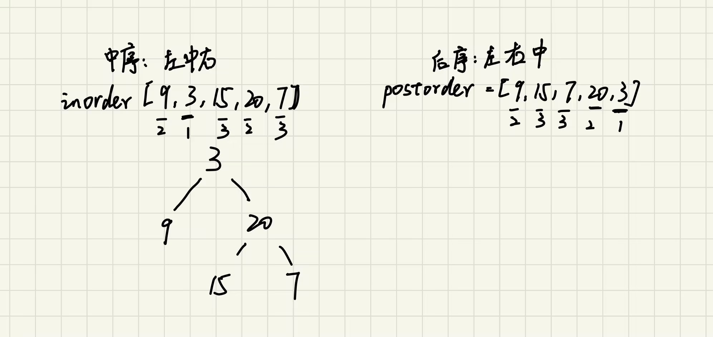

二叉树
二叉树的基本理论
从二叉树的总类
特殊的二叉树主要有两种：满二叉树和完全二叉树
满二叉树
满二叉树：二叉树只有结点为0的结点和度为2的结点，并且度为0的结点在同一层上
如下图
这棵树为满二叉树，深度为k时，有2^k-1个结点
完全二叉树
完全二叉树：出来最底层结点没有被填满外，其余层结点数都达到最大，且最下面一层结点是从最左边连续
最底层有1~2^(k-1)个结点
优先级队列其实就是一个堆，堆就是一颗完全二叉树，同时保证父子结点的顺序关系
二叉搜索树
二叉搜索树是一棵中序遍历有序的树
- 左子树上结点小于根结点值
- 右子树上结点大于根结点值

如上两个都是二叉搜索树
平衡二叉搜索树
平衡二叉搜索树: 也称AVL(Adelson-Velsky and Landis)树，它左右两个树的高度差绝对值不超过1，且左右两棵
子树都是平衡二叉树。n个结点的平衡二叉搜索树高度可保持在 O(logN)，搜索时间复杂度O(logN )
最后一棵不是因为高度差绝对值超过了1.
java中map和set底层实现是红黑树，这个以后找个篇章特意写吧！
二叉树的存储方式
二叉树可以链式存储，也可以顺序存储。链式存储使用指针，顺序存储使用数组
链式存储数据结构
public class TreeNode {
int val;
TreeNode left;
TreeNode right;
public TreeNode(){
}
public TreeNode(int val){
this.val = val;
}
public TreeNode(int val,TreeNode left,TreeNode right){
this.val = val;
this.left = left;
this.right = right;
}
}
当使用数组存储二叉树时，若父节点下标是i，则其左孩子下标为2i+1，右孩子为2i+2。
在Java中输入数组使其构成树
public class Solution {
static class TreeNode{
int val;
TreeNode left;
TreeNode right;
public TreeNode(){}
public TreeNode(int val){
this.val = val;
this.left = null;
this.right = null;
}
}
public static void main(String[] args) {
int[] arr = new int[7];
Scanner in = new Scanner(System.in);
for (int i = 0;i < arr.length;i++){
arr[i] = in.nextInt();
}
Solution solution = new Solution();
TreeNode root = solution.constructBinaryTree(arr);
System.out.println(root.right.right.val);
}
public TreeNode constructBinaryTree(final int[] arr){
// 初始树
List<TreeNode> treeNodeList = arr.length > 0 ? new ArrayList<>(arr.length) : null;
TreeNode root = null;
// 给树各个结点赋值
for (int i = 0;i < arr.length;i++){
TreeNode node = null;
if (arr[i] != -1){
node = new TreeNode(arr[i]);
}
treeNodeList.add(node);
if (i == 0){
root = node;
}
}
// 指定树结点的左右孩子
for (int i = 0;i * 2 + 1<arr.length;i++){
TreeNode node = treeNodeList.get(i);
if (node != null){
// 左孩子2i+1
node.left = treeNodeList.get(2 * i + 1);
// 右孩子2i+2
if (i * 2 + 2 < arr.length){
node.right = treeNodeList.get(2 * i + 2);
}
}
}
return root;
}
}
二叉树的遍历方式
二叉树主要有两种遍历方式：
- 深度优先遍历：先往深走，遇到叶子结点再往回走
- 前序遍历(递归法，迭代法)
- 中序遍历(递归法，迭代法)
- 后序遍历(递归法，迭代法)
- 广度优先遍历：一层一层的去遍历
- 层次遍历(递归法，迭代法)
二叉树的深度优先遍历
主要记录深度优先的递归法，迭代法可以借助栈来实现
在进行递归时也会使用到栈，但是这个栈是由内存自己为我们分配的二叉树的前序遍历是从上往下的遍历方式
前序遍历的递归法
public List<Integer> preorderTraversal(TreeNode root){
List<Integer> res = new ArrayList<>();
preorder(root,res);
return res;
}
public void preorder(TreeNode root,List<Integer> res){
if (root == null){
return;
}
res.add(root.val);
preorder(root.left,res);
preorder(root.right,res);
}
二叉搜索树的中序遍历是有序的
中序遍历的递归法
public List<Integer> inorderTraversal(TreeNode root) {
List<Integer> res = new ArrayList<>();
inorder(root, res);
return res;
}
public void inorder(TreeNode root, List<Integer> res) {
if (root == null) {
return;
}
inorder(root.left, res);
res.add(root.val);
inorder(root.right, res);
}
二叉树的后序遍历是从下往上的遍历方式
后序遍历的递归法
public List<Integer> postorderTraversal(TreeNode root) {
List<Integer> res = new ArrayList<>();
postorder(root, res);
return res;
}
public void postorder(TreeNode root, List<Integer> res) {
if (root == null) {
return;
}
preorder(root.left, res);
preorder(root.right, res);
res.add(root.val);
}
二叉树的广度优先遍历
广度优先遍历也可使用递归法与迭代法
递归法是每一层作为一个递归
迭代法则是借助队列
二叉树的广度优先遍历
List<List<Integer>> res = new ArrayList<>();
public List<List<Integer>> levelOrder(TreeNode root) {
levelOne(root, 0);
levelTwo(root);
return res;
}
// 递归法
public void levelOne(TreeNode root, int depth) {
if (root == null) {
return;
}
depth++;
if (res.size() < depth) {
List<Integer> item = new ArrayList<>();
res.add(item);
}
res.get(depth - 1).add(root.val);
levelOne(root.left, depth);
levelOne(root.right, depth);
}
// 迭代法，借助队列
public void levelTwo(TreeNode root) {
if (root == null) {
return;
}
Queue<TreeNode> queue = new LinkedList<>();
queue.offer(root);
while (!queue.isEmpty()) {
List<Integer> item = new ArrayList<>();
int len = queue.size();
while (len > 0) {
TreeNode temp = queue.poll();
item.add(temp.val);
if (temp.left != null) {
queue.offer(temp.left);
}
if (temp.right != null) {
queue.offer(temp.right);
}
len--;
}
res.add(item);
}
}
对于二叉树的相关特征以及算法主要有以下
二叉树的属性
(1)二叉树是否对称:101.对称二叉树
给定一个二叉树，判断其是不是对称的，如下图
判断一棵树是不是轴对称，既是判断根节点的左子树和右子树是不是翻转的，也就是左的左是否等于右的右，
左的右是不是等于右的左，使用递归对每个结点进行判断；
也可以借助队列，将左右结点按照顺序放入队列中进行比较。
递归法
public boolean isSymmetric(TreeNode root) {
return compare(root.left,root.right);
}
public boolean compare(TreeNode left,TreeNode right){
if (left == null && right != null){
return false;
}
if (left != null && right == null){
return false;
}
if (left == null && right == null){
return true;
}
if (left.val != right.val){
return false;
}
// 比较外侧
boolean outside = compare(left.left,right.right);
// 比较内侧
boolean inside = compare(left.right,right.left);
return outside && inside;
}
迭代法
public boolean isSymmetric(TreeNode root) {
Queue<TreeNode> queue = new LinkedList<>();
queue.offer(root.left);
queue.offer(root.right);
while (!queue.isEmpty()){
TreeNode left = queue.poll();
TreeNode right = queue.poll();
if (left == null && right == null){
continue;
}
if (left == null || right == null || left.val != right.val){
return false;
}
// 按照左左，右右，左右，右左顺序加入队列
queue.offer(left.left);
queue.offer(right.right);
queue.offer(left.right);
queue.offer(right.left);
}
return true;
}
(2)求二叉树的最大深度和最小深度
求最大深度，通过递归法，递归返回的值即是树的深度，也可以同迭代法进行层序遍历，每遍历一层将depth++；
求最小深度，通过递归法，找到第一个左右结点都为空的结点即为最小深度结点；通过迭代法进行层序遍历，第一个左右结点都为空
的结点即为最小深度结点。
最大深度递归法
public int maxDepth(TreeNode root) {
if (root == null) {
return 0;
} else {
int left = maxDepth(root.left);
int right = maxDepth(root.right);
return Math.max(left, right) + 1;
}
}
最大深度迭代法
public int maxDepth(TreeNode root) {
if (root == null){
return 0;
}
Queue<TreeNode> queue = new LinkedList<>();
queue.offer(root);
int deep = 0;
while (!queue.isEmpty()){
int len = queue.size();
while (len > 0){
TreeNode temp = queue.poll();
if (temp.left != null){
queue.offer(temp.left);
}
if (temp.right != null) {
queue.offer(temp.right);
}
len--;
}
// 借助队列，没迭代一层之后深度++；
deep++;
}
return deep;
}
最小深度递归法
public int minDepth(TreeNode root) {
if (root == null) {
return 0;
}
int leftDepth = minDepth(root.left);
int rightDepth = minDepth(root.right);
if (root.left == null) {
return rightDepth + 1;
}
if (root.right == null) {
return leftDepth + 1;
}
// 左右结点都不为null
return Math.min(leftDepth, rightDepth) + 1;
}
最小深度迭代法
public int minDepth(TreeNode root) {
if(root == null){
return 0;
}
Queue<TreeNode> queue = new LinkedList<>();
queue.offer(root);
int depth = 0;
while (!queue.isEmpty()){
int len = queue.size();
depth++;
TreeNode temp = null;
while (len > 0){
temp = queue.poll();
// 当遇到第一个左右结点都为空的直接返回。
if (temp.left == null && temp.right==null){
return depth;
}
if (temp.left != null){
queue.offer(temp.left);
}
if (temp.right != null){
queue.offer(temp.right);
}
len--;
}
}
return depth;
}
(3)求二叉树结点个数
直接通过递归法，递归次数即为结点个数
也可以借助队列，队列中每加入一个结点，则结点总个数++
递归法
public int countNodes(TreeNode root) {
if (root == null){
return 0;
}
return countNodes(root.left) + countNodes(root.right) + 1;
}
迭代法
public int countNodes(TreeNode root) {
if (root == null){
return 0;
}
Queue<TreeNode> queue = new LinkedList<>();
queue.offer(root);
int result = 0;
while (!queue.isEmpty()){
int len = queue.size();
while (len > 0){
TreeNode temp = queue.poll();
// 统计结点个数
result++;
if (temp.left != null){
queue.offer(temp.left);
}
if (temp.right != null){
queue.offer(temp.right);
}
len--;
}
}
return result;
}
(4)二叉树是否平衡
判断二叉树是否平衡即每一个结点都需要进行判断，对每一个结点进行左右子树高度比较，所以我们可以通过
后序遍历来做,使用-1做为不平衡的标志
递归后序遍历
public boolean isBalanced(TreeNode root) {
return getHeight(root) != -1;
}
private int getHeight(TreeNode root) {
if (root == null) {
return 0;
}
int leftHeight = getHeight(root.left);
if (leftHeight == -1) {
return -1;
}
int rightHeight = getHeight(root.right);
if (rightHeight == -1) {
return -1;
}
// 左右子树高度差大于1，return -1表示已经不是平衡树了
if (Math.abs(leftHeight - rightHeight) > 1) {
return -1;
}
return Math.max(leftHeight, rightHeight) + 1;
}
(5)求所有路径
求根节点到所有叶子结点的路径，可以很简单的使用深度优先遍历直到叶子结点
使用前序遍历使父节点指向子节点，直到子节点的左右孩子都为空
也可以使用迭代法，借助栈，非空时一直往站内添加元素
递归法
public List<String> binaryTreePaths(TreeNode root) {
List<String> res = new ArrayList<>();
if (root == null){
return res;
}
dfs(root,"",res);
return res;
}
public void dfs(TreeNode node,String path,List<String> res){
if (node != null){
StringBuffer sb = new StringBuffer(path);
sb.append(Integer.toString(node.val));
if (node.left == null && node.right==null){
res.add(sb.toString());
} else {
sb.append("->");
dfs(node.left,sb.toString(),res);
dfs(node.right,sb.toString(),res);
}
}
}
迭代法
public List<String> binaryTreePaths(TreeNode root) {
if (root == null){
return null;
}
List<String> res = new ArrayList<>();
Stack<Object> stack = new Stack<>();
// 节点和路径同时入栈
stack.push(root);
stack.push(root.val + "");
while (!stack.isEmpty()){
// 节点和路径同时出栈
String path = (String) stack.pop();
TreeNode node = (TreeNode) stack.pop();
// 若找到叶子节点
if (node.left == null && node.right==null){
res.add(path);
}
//右子节点不为空
if (node.right!=null){
stack.push(node.right);
stack.push(path + "->" + node.right.val);
}
//左子节点不为空
if (node.left != null){
stack.push(node.left);
stack.push(path + "->" + node.left.val);
}
}
return res;
}
(6)求左叶子的和
某一结点是左叶子的条件是此结点是一结点的左结点且左结点没有左右孩子
根据这一条件就可以很轻松的通过迭代法或递归法来求左叶子的和
递归法
public int sumOfLeftLeaves(TreeNode root) {
if (root == null){
return 0;
}
int leftValue = sumOfLeftLeaves(root.left); //左
int rightValue = sumOfLeftLeaves(root.right); //右
int midValue = 0;
if (root.left != null && root.left.left == null && root.left.right == null){
midValue = root.left.val;
}
int sum = leftValue + rightValue + midValue;
return sum;
}
迭代法
public int sumOfLeftLeaves(TreeNode root) {
int res = 0;
if (root == null){
return res;
}
Queue<TreeNode> queue = new LinkedList<>();
queue.offer(root);
while (!queue.isEmpty()){
int len = queue.size();
while (len > 0){
TreeNode temp = queue.poll();
// 判断叶子结点
if (temp.left != null && temp.left.left == null && temp.left.right ==null){
res = res + temp.left.val;
}
if (temp.left != null){
queue.offer(temp.left);
}
if (temp.right != null){
queue.offer(temp.right);
}
len--;
}
}
return res;
}
二叉树的修改与改造
(1)翻转二叉树
使用递归法前序遍历交换左右孩子，或使用迭代法借助队列模拟前序遍历
递归法
/**
* 前后序遍历都可以
* 中序不行，因为先左孩子交换孩子，再根交换孩子（做完后，右孩子已经变成了原来的左孩子），
* 再右孩子交换孩子（此时其实是对原来的左孩子做交换）
*/
public TreeNode invertTree(TreeNode root) {
reverse(root);
return root;
}
public void reverse(TreeNode node){
if (node == null){
return;
}
TreeNode temp = node.left;
node.left = node.right;
node.right = temp;
reverse(node.left);
reverse(node.right);
}
迭代法
public TreeNode invertTree(TreeNode root) {
if (root == null){
return null;
}
ArrayDeque<TreeNode> deque = new ArrayDeque<>();
deque.offer(root);
while (!deque.isEmpty()){
int size = deque.size();
while (size-- > 0){
TreeNode node = deque.poll();
swap(node);
if (node.left != null){
deque.offer(node.left);
}
if (node.right != null){
deque.offer(node.right);
}
}
}
return root;
}
public void swap(TreeNode root){
TreeNode temp = root.left;
root.left = root.right;
root.right = temp;
}
(2)构造二叉树
给定两个整数数组 inorder 和 postorder ，其中 inorder 是二叉树的中序遍历，
postorder 是同一棵树的后序遍历，构造并返回这颗二叉树。

…